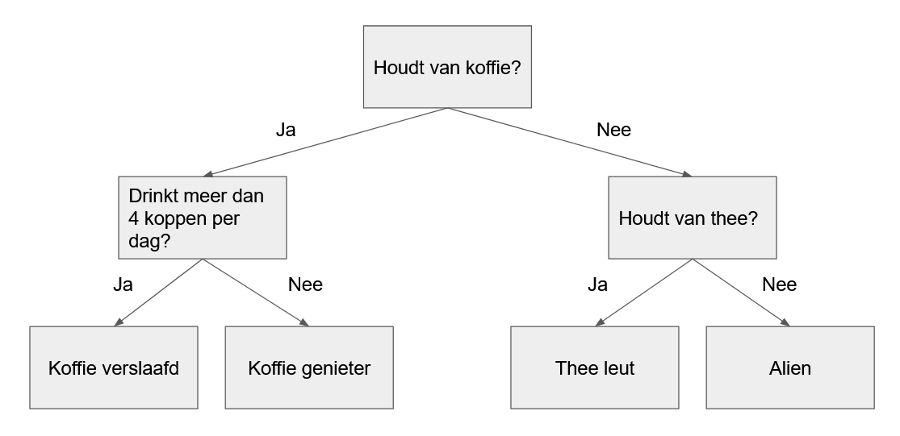

Tussenproject - Tour de France Voorpspellen met Machine Learning
Best presterende renners van de Tour de France voorspellen
Python
Tussenproject
AI
ML
Author
Mees Molenaar
Published
July 13, 2022
Het jaarlijkse wielerspektakel de Tour de France staat weer voor de deur! Dat betekent ook dat ik renners mag gaan kiezen voor de eveneens jaarlijks terugkerende Wielerpoule (in het kort, je kiest een aantal wielrenners die mee gaan doen met de Tour en op basis van hun uitslag haal je punten). Nu heb ik de laatste jaren het wielrennen niet tot nauwelijks gevolgd waardoor ik geen idee heb welke renners er in vorm zijn. Daarom heb ik weer besloten om mijn programmeer en machine learning (ML) vaardigheden te gebruiken. Hiermee hoop ik het beste team samen te stellen. Als eerste hebben we data nodig om de beste renners te kunnen voorspellen en gelukkig is er een mooie website waar wij die data vanaf kunnen halen!
Data van een website halen
Om met Python data van een website te halen heb je verschillende Python packages ter beschikking. Een van deze packages heb ik al vaker gebruikt en voor dit project ga ik dat weer gebruiken, BeautifulSoup (BS). Met BS kan je makkelijk navigeren door de HTML (opmaak) van een website en daarvandaan dan ook tekst ophalen. Maar dan moet je wel een website kunnen opvragen met coderen! Gelukkig kan dit ook met Python, namelijk met de requests package. In onderstaande code zie je een voorbeeld van hoe je een website in een BS object laad (zie hieronder).
# Example: How to open a page using requests and BeautifulSouprace_url =r"https://www.procyclingstats.com/race/tour-de-france/2022/stage-4"# Perform a get request on the urlreq = requests.get(race_url)# Make a BeautifulSoup object from the requests's textsoup = BeautifulSoup(req.text, "lxml")# Get the title of the pageprint(soup.find('title').string)
---------------------------------------------------------------------------FeatureNotFound Traceback (most recent call last)
Cell In[8], line 9 6 req = requests.get(race_url)
8 # Make a BeautifulSoup object from the requests's text
----> 9 soup = BeautifulSoup(req.text, "lxml")
11 # Get the title of the page
12 print(soup.find('title').string)
File ~/blog/CabbageMees_Quarto/venv/lib/python3.9/site-packages/bs4/__init__.py:248, in BeautifulSoup.__init__(self, markup, features, builder, parse_only, from_encoding, exclude_encodings, element_classes, **kwargs) 246 builder_class = builder_registry.lookup(*features)
247 if builder_class is None:
--> 248 raise FeatureNotFound(
249 "Couldn't find a tree builder with the features you "
250 "requested: %s. Do you need to install a parser library?"
251 % ",".join(features))
253 # At this point either we have a TreeBuilder instance in
254 # builder, or we have a builder_class that we can instantiate
255 # with the remaining **kwargs.
256 if builder is None:
FeatureNotFound: Couldn't find a tree builder with the features you requested: lxml. Do you need to install a parser library?
Vervolgens kan je ingebouwde methodes van het BS object gebruiken om door de HTML te zoeken. Zelf kijk ik eerst in de internet browser naar de elementen van de website waarvan ik de data wil. Afhankelijk van de browser die je gebruikt kan je elementen inspecteren. Ik let daarbij op het het HTML type (div, table, etc) en of het een class of id heeft. Met deze informatie kan je dan een specifiek element zoeken, zoals de top-20 van een uitslag (zie hieronder).
# Example: Getting the top-20 results of a racerace_url =r"https://www.procyclingstats.com/race/tour-de-france/2022/stage-4"# Perform a get request on the urlreq = requests.get(race_url)# Make a BeautifulSoup object from the requests's textsoup = BeautifulSoup(req.text, "lxml")# I used the browser to find the element we are interested inresult_list = soup.find("table", class_="results basic moblist10").find("tbody")# Each result is in a table row (tr)results = result_list.find_all("tr")race_top_20 = {}for i inrange(20): result = results[i]# Again, use your browser to find the element you are interested in rider = result.find_all("a")[0].text race_top_20[i +1] = rider pprint.pprint(race_top_20)
---------------------------------------------------------------------------FeatureNotFound Traceback (most recent call last)
Cell In[9], line 9 6 req = requests.get(race_url)
8 # Make a BeautifulSoup object from the requests's text
----> 9 soup = BeautifulSoup(req.text, "lxml")
11 # I used the browser to find the element we are interested in
12 result_list = soup.find("table", class_="results basic moblist10").find("tbody")
File ~/blog/CabbageMees_Quarto/venv/lib/python3.9/site-packages/bs4/__init__.py:248, in BeautifulSoup.__init__(self, markup, features, builder, parse_only, from_encoding, exclude_encodings, element_classes, **kwargs) 246 builder_class = builder_registry.lookup(*features)
247 if builder_class is None:
--> 248 raise FeatureNotFound(
249 "Couldn't find a tree builder with the features you "
250 "requested: %s. Do you need to install a parser library?"
251 % ",".join(features))
253 # At this point either we have a TreeBuilder instance in
254 # builder, or we have a builder_class that we can instantiate
255 # with the remaining **kwargs.
256 if builder is None:
FeatureNotFound: Couldn't find a tree builder with the features you requested: lxml. Do you need to install a parser library?
De opgehaalde data
In totaal had ik deze data opgehaald: * Van de Tour de France van 2000 - 2021 alle renners die mee deden * Via al die renners, voor ieder jaar, de races en eindklassering URLs * Voor alle renners de geboortedatum, de teams en de PCS score (de laatste twee voor ieder jaar) * Voor iedere race de datum, top-20 en de gemiddelde PCS score van de top-20
Nadat al deze data is verzameld kunnen we deze data gebruiken om de features te gaan maken waarmee je een ML model kunt trainen.
Features maken
Een feature is een deel van de totale informatie waarmee je een voorspelling kunt maken. Bijvoorbeeld, wanneer je iemands gewicht wilt voorspellen aan de hand van iemands lengte, dan is lengte je feature (zie grafiek hieronder). Hoewel het verband tussen gewicht en lengte niet 1 op 1 is zijn over het algemeen lange mensen zwaarder dan kleine mensen. Een andere feature die je dan zou kunnen toevoegen om je voorspelling te verbeteren is bijvoorbeeld het aantal uren sporten per week. Samen met de lengte zal dit betere voorspellingen geven omdat (vaak) wanneer je meer sport je geen uitschieter hebt in gewicht (een nogal grove aanname). Zoals je misschien merkt kan je vele features bedenken en daarom heb je zeker een mate van creativiteit nodig!
data van: https://www.tno.nl/groei
Twee jaar geleden (v1) had ik ook een ML model gemaakt maar dit keer wilde ik nieuwe features gebruiken. In V1 had ik het idee om de races op te delen in types (vlak, heuvelachtig met vlakke finish, heuvelachtig met finish bergop, gebergte met vlakke finish en gebergte met finish bergop; Voor de races waar dit niet voor bekend was had ik zelfs een model getraind om dat te voorspellen). Vervolgens had ik voor iedere types de plekken 1 t/m 4, 5 t/m 8 en 9 t/m 12 ingedeeld (zie Tabel hieronder). Voor iedere renner telde ik dan in het voorgaande jaar hoe vaak iemand deze uitslag in deze type had (zie voorbeeld van Chris Froome hieronder). Hoewel ik best tevreden was met deze features, namen ze niet mee hoe sterk het deelnemersveld was. Wanneer je veel wint maar je tegenstand niet heel sterk is, is deze overwinning minder relevant (weer een grove aanname) in de Tour, want in de Tour is het deelnemersveld vaak erg sterk. Daarom heb ik voor deze Tour de France nieuwe features bedacht.
Features
Chris Froome
PCS
1377
Team PCS
4172
Age
29
flat1-4
1.0
flat5-8
0.0
flat9-12
2.0
hills(flat)1-4
1.0
hills(flat)5-8
0.0
hills(flat)9-12
1.0
hills(uphill)1-4
2.0
hills(uphill)5-8
1.0
hills(uphill)9-12
1.0
mountains(flat)1-4
1.0
mountains(flat)5-8
0.0
mountains(flat)9-12
1.0
mountains(uphill)1-4
4.0
mountains(uphill)5-8
5.0
mountains(uphill)9-12
1.0
gc1-4
3.0
gc5-8
1.0
gc9-12
1.0
Voor deze Tour nemen we bij iedere rit dus de sterkte van het deelnemersveld mee. Dat doen we door de gemiddelde PCS score van de top-20 uit te rekenen. Vervolgens verdelen we de ritten in 5 kwantielen (zeer weinig competitief, weinig competitief, competitief, erg competitief en zeer erg competitief). En daarbij had ik dan dit keer de resultaten als volgt verdeeld: 1 t/m 5, 6 t/m 10, 11 t/m 15 en 16 t/m 20 (zie tabel met voorbeeld van Wout van Aert hieronder).
Features
Wout van Aert
PCS
2820
Team PCS
9724
PCS ratio
0.29
Age
27
top_5s_category_0
0
top_10s_category_0
0
top_15s_category_0
0
top_20s_category_0
0
top_5s_category_1
0
top_10s_category_1
0.0
top_15s_category_1
0
top_20s_category_1
0
top_5s_category_2
2
top_10s_category_2
0
top_15s_category_2
0
top_20s_category_2
0
top_5s_category_3
1
top_10s_category_3
1
top_15s_category_3
0
top_20s_category_3
0
top_5s_category_4
11
top_10s_category_4
2
top_15s_category_4
2
top_20s_category_4
0
top_5s_category_gc
1.0
top_10s_category_gc
0.0
top_15s_category_gc
0
top_20s_category_gc
0
Daarnaast had ik nog een aantal renner specifieke features: leeftijd, PCS score, PCS punten van het team en PCS ratio (eigen PCS / team PCS). Nu hebben we alle features waarop we een ML model kunnen trainen!
Het trainen van een model
Voor data, zoals in dit project, in een tabel structuur is het meest gebruikte en vaak ook beste model een vorm van een gradient boosted tree. In het kort is een tree vaak verdeeld in een aantal ja/nee vragen. Een voorbeeld van een simpele tree is een decision tree (voorbeeld hieronder). Het idee van deze tree is in de loop van de tijd al meer uitgebreid, van random forests naar dus gradient boosted trees. Dit zijn (simpel en kort door de bocht) een verzameling van meerdere trees die na het trainen heel goed zijn om een voorspelling te maken. Een van mijn favoriete tree algoritmes is XGBoost en deze gaan we dan ook gebruiken!

Een XGBoost model is redelijk makkelijk te trainen door (jawel alweer!) een Python package: XGBoost. Alhoewel, je hebt dan nog heel veel instellingen die kunt optimaliseren. Gelukkig heb je daar ook een goede bron voor, namelijk Gridsearch van Sklearn (alweer een package!). Wanneer je Gridsearch en XGBoost combineert kan je meerdere instellingen vergelijken en dan krijg je als resultaat de getrainde modellen (met de verschillende parameters). Je kunt dan zelfs het beste model met de beste instellingen opvragen! Ideaal en het voelt als magie!
De resultaten
De resultaten van het model zien er op het eerste gezicht niet raar uit (zie hieronder). De volgens Wielerpoule duurste renners zitten qua voorspelling bovenin. Met voor mij als opvallendste naam Vlasov (voor mij geen bekende naam maar de laatste tijd volg ik het wielrennen nauwelijks). Om mijn team samen te stellen heb ik de voorspelde punten gedeeld door de kosten. En daar heb ik, naast de top 4, mijn team mee opgevuld. Eens zien of we mee gaan spelen voor de prijzen!
rider_name
prediction
price
score_price_ratio
VAN DER POEL Mathieu
84.196594
200
0.420983
VLASOV Aleksandr
75.061699
150
0.500411
POGACAR Tadej
70.501328
200
0.352507
ROGLIC Primož
67.192093
200
0.335960
VAN AERT Wout
66.121864
200
0.330609
MARTINEZ Daniel Felipe
58.990757
100
0.589908
VINGEGAARD Jonas
57.898109
150
0.385987
JAKOBSEN Fabio
55.955868
150
0.373039
KUNG Stefan
55.773567
100
0.557736
KRISTOFF Alexander
54.939995
100
0.549400
COSNEFROY Benoit
54.132721
100
0.541327
PEDERSEN Mads
50.576691
100
0.505767
MOHORIC Matej
50.398064
100
0.503981
VAN BAARLE Dylan
49.590599
100
0.495906
HOFSTETTER Hugo
49.079250
100
0.490793
EWAN Caleb
46.512360
100
0.465124
LAPORTE Christophe
44.920681
100
0.449207
TEUNS Dylan
44.595673
100
0.445957
MCNULTY Brandon
44.574734
100
0.445747
PHILIPSEN Jasper
44.041866
100
0.440419
Tot de volgende keer en veel plezier met het volgen van de Tour de France!
Mees
P.S: De uiteindelijke dataset samen met de code voor het trainen van het ML model kan je vinden in deze Github repo.
P.S 2: Tot dusver werkt het model (na ongeveer 1 week) redelijk. Helaas valt Mathieu van der Poel tegen (en die was het duurste).